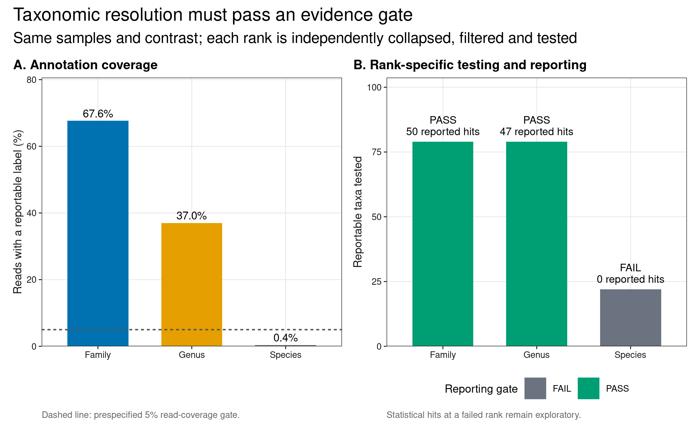
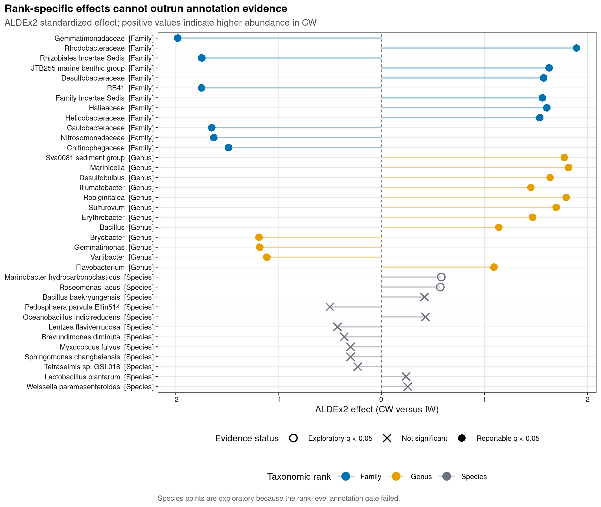
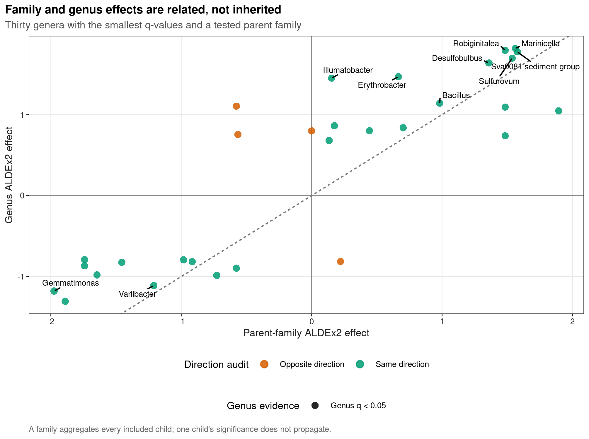

options(timeout = 600)
data_url <- "https://raw.githubusercontent.com/petemeng/microbiome-best-practices/3cb6a817e0c73ab7ecbec1cedc1ad80cbb9ecfaa/"
input_files <- c(
"data/small/metadata.tsv",
"data/small/otutab.tsv",
"data/small/taxonomy.tsv"
)
for (path in input_files) {
dir.create(dirname(path), recursive = TRUE, showWarnings = FALSE)
if (!file.exists(path)) download.file(paste0(data_url, path), path, mode = "wb", quiet = TRUE)
}多分类级差异（差异科/属/种，collapse 逐级）
跨分类层级检验必须控制重复与依赖
微生物组论文常把“差异科—差异属—差异种”并排画成 dot plot、cladogram 或分层森林图。LEfSe 原文的 cladogram 强调同一 lineage 上不同层级的 biomarker；但 rank 越低不等于证据越精确。这里从真实湿地 16S 三件套重绘一张 rank evidence cascade、一张多 rank effect map 和一张 parent–child 一致性图，并把 annotation depth 作为正式报告门禁。
重要先给结论
Family、Genus、Species 必须各自从 ASV 表重新聚合、过滤、检验和校正，不能先在 genus 找显著菌再向上/向下补名字。该湿地数据中，拥有可报告 Family、Genus、Species 注释的 reads 分别约为 67.6%、37.0% 和 0.35%。因此 Family 与 Genus 可以承担主报告；Species 即使某行得到小 p-value，也只属于探索性结果，不能写成“发现差异物种”。
本页预声明 CW 对 IW、prevalence >=10%、total reads >=20、每 rank 最多 80 个 group-blind 高信息行、BH q<0.05。Family/Genus 使用 ALDEx2 IQLR reference；Species 因可用 feature 太少而预声明使用全表 CLR reference，并同时判定报告门禁失败。每个 rank 的 unclassified residual 保留在 denominator 中，却永远不作为 biomarker。
一条谱系的多个显著节点，能算多项发现吗？
同一批 reads 同时进入 family 和 genus 汇总，父子节点显著不是两次独立复现。若一个 family 的变化由单个 genus 主导，两者可能是在不同分辨率重复描述同一信号；若子节点方向相反，聚合后又可能抵消。应沿完整谱系检查组成和方向，再决定主要结论在哪一层成立。
本例 species 注释仅覆盖约 0.35% reads。5% 覆盖与 20 个 taxa 是本次比较的保守筛选条件，并不是验证物种分辨率的国际标准；即使满足，也还需要扩增区域确实能区分目标物种。若跨多个 rank 挑选最小 q 值后写成一组发现，rank 内 BH 已不再覆盖全部选择过程。可预先指定主要 rank，其他层作为解释，或采用适合整棵分类层级的多重检验方案。
下载并读取本次分析的数据
需要 R，以及 ALDEx2、ggplot2、ggrepel、knitr、patchwork、ragg、scales、svglite。本次使用中国湿地的 OTU count 表、分类表和样本信息表。
在一个新建的文件夹中运行以下代码，下载文件后按文中的顺序继续分析：
library(ggplot2)
set.seed(20260732)
font_pub <- "sans"
pal_pub <- c(
blue = "#0072B2", orange = "#E69F00", green = "#009E73",
vermillion = "#D55E00", purple = "#CC79A7", sky = "#56B4E9",
yellow = "#F0E442", grey = "#6B7280"
)
scale_color_pub <- function(..., values = unname(pal_pub)) {
ggplot2::scale_color_manual(..., values = values)
}
scale_fill_pub <- function(..., values = unname(pal_pub)) {
ggplot2::scale_fill_manual(..., values = values)
}
theme_pub <- function(base_size = 10, base_family = font_pub) {
ggplot2::theme_bw(base_size = base_size, base_family = base_family) +
ggplot2::theme(
panel.grid.minor = ggplot2::element_blank(),
panel.grid.major = ggplot2::element_line(
colour = "#E6E6E6", linewidth = 0.25
),
axis.text = ggplot2::element_text(colour = "#1A1A1A"),
axis.title = ggplot2::element_text(colour = "#1A1A1A"),
axis.ticks = ggplot2::element_line(colour = "#1A1A1A", linewidth = 0.3),
plot.title.position = "plot",
plot.title = ggplot2::element_text(
face = "bold", size = ggplot2::rel(1.15)
),
plot.subtitle = ggplot2::element_text(colour = "#4D4D4D"),
plot.caption = ggplot2::element_text(colour = "#666666", hjust = 0),
strip.background = ggplot2::element_rect(
fill = "#F2F2F2", colour = "#B3B3B3", linewidth = 0.3
),
strip.text = ggplot2::element_text(face = "bold"),
legend.key = ggplot2::element_blank(), legend.position = "top"
)
}
save_pub <- function(
plot, file_base, width = 89, height = 70, units = "mm",
dpi = 600, write_svg = TRUE, write_tiff = TRUE,
base_family = font_pub
) {
dir.create(dirname(file_base), recursive = TRUE, showWarnings = FALSE)
ggplot2::ggsave(
paste0(file_base, ".pdf"), plot, width = width, height = height,
units = units, device = grDevices::cairo_pdf,
family = base_family, bg = "white"
)
if (write_svg) ggplot2::ggsave(
paste0(file_base, ".svg"), plot, width = width, height = height,
units = units, device = svglite::svglite, bg = "white"
)
ggplot2::ggsave(
paste0(file_base, ".png"), plot, width = width, height = height,
units = units, dpi = dpi, device = ragg::agg_png, bg = "white"
)
if (write_tiff) ggplot2::ggsave(
paste0(file_base, ".tiff"), plot, width = width, height = height,
units = units, dpi = dpi, device = ragg::agg_tiff,
compression = "lzw", bg = "white"
)
invisible(plot)
}读取三件套，锁定 CW 对 IW
read_keyed_tsv <- function(path) {
x <- readr::read_tsv(
path, show_col_types = FALSE, progress = FALSE,
name_repair = "minimal", na = character()
)
ids <- as.character(x[[1L]])
stopifnot(!anyDuplicated(ids))
out <- as.data.frame(x[-1L], check.names = FALSE)
rownames(out) <- ids
out
}
otutab_raw <- read_keyed_tsv("data/small/otutab.tsv")
taxonomy <- read_keyed_tsv("data/small/taxonomy.tsv")
metadata_all <- read_keyed_tsv("data/small/metadata.tsv")
otutab_all <- as.matrix(data.frame(
lapply(otutab_raw, as.integer), check.names = FALSE
))
rownames(otutab_all) <- rownames(otutab_raw)
sample_ids <- rownames(metadata_all)[metadata_all$Group %in% c("IW", "CW")]
metadata <- metadata_all[sample_ids, , drop = FALSE]
metadata$Group <- relevel(factor(metadata$Group), ref = "IW")
otutab <- otutab_all[, sample_ids, drop = FALSE]
stopifnot(
nrow(otutab_all) == 13628L,
ncol(otutab_all) == 90L,
sum(otutab_all) == 1619670L,
ncol(otutab) == 60L,
all(otutab >= 0L),
all(otutab == round(otutab))
)
head(otutab[, 1:5])
head(taxonomy)
head(metadata) S1 S2 S3 S4 S5
OTU_4272 1 0 1 1 0
OTU_236 1 4 0 2 35
OTU_399 9 2 2 4 4
OTU_1556 5 18 7 3 2
OTU_32 83 9 19 8 102
OTU_706 0 1 0 1 0
Kingdom Phylum
OTU_4272 k__Bacteria p__Firmicutes
OTU_236 k__Bacteria p__Chloroflexi
OTU_399 k__Bacteria p__Proteobacteria
OTU_1556 k__Bacteria p__Acidobacteria
OTU_32 k__Archaea p__Miscellaneous Crenarchaeotic Group
OTU_706 k__Bacteria p__Actinobacteria
Class Order Family
OTU_4272 c__Bacilli o__Bacillales f__
OTU_236 c__ o__ f__
OTU_399 c__Betaproteobacteria o__Nitrosomonadales f__Nitrosomonadaceae
OTU_1556 c__Acidobacteria o__Subgroup 17 f__
OTU_32 c__ o__ f__
OTU_706 c__Actinobacteria o__Frankiales f__Nakamurellaceae
Genus Species
OTU_4272 g__ s__
OTU_236 g__ s__
OTU_399 g__ s__
OTU_1556 g__ s__
OTU_32 g__ s__
OTU_706 g__Nakamurella s__
Group Type Saline
S1 IW NE Non-saline soil
S2 IW NE Non-saline soil
S3 IW NE Non-saline soil
S4 IW NE Non-saline soil
S5 IW NE Non-saline soil
S6 IW NE Non-saline soil下载完整 R 脚本。脚本包含数据下载、计算和图形导出。
首次使用时安装 R 包
install.packages(c(
"BiocManager", "ggplot2", "ggrepel", "patchwork", "ragg", "readr", "scales",
"svglite", "systemfonts"
))
BiocManager::install(version = "3.19", ask = FALSE)
BiocManager::install("ALDEx2", ask = FALSE)taxonomic rank 改变的是数据和假设族
Collapse 不是改一列标签
设 ASV count 为 \(Y_{is}\)，其 rank-\(r\) lineage 属于集合 \(G_{kr}\)。rank-\(r\) count 应重新求和：
\[ Y^{(r)}_{ks}=\sum_{i\in G_{kr}}Y_{is}. \]
同名 genus 可能位于不同上级 lineage；只按末级字符串 rowsum(Genus) 会错误合并。代码先用 Kingdom→目标 rank 的完整 lineage 建 key，再给图生成短 label。
每个分类层级分别进行多重检验校正
Family 有一套 tested hypotheses，Genus 和 Species 又各有一套。每个 rank 内独立 BH 回答“在这一 rank 的预声明检验族中控制 FDR”。若论文把三个 rank 混成一个确认性 claim family，还应在 rank 之间追加层级/全局校正，或预声明一个 primary rank、其余只作解释。
Parent 与 child 不必同时显著
一个 family 包含多个 genus：若 child 方向相反，family 汇总可能抵消；若只有一个 child 变化，family 的效应可能被其余成员稀释。反之，family 显著不意味着每个 genus 都显著。Cladogram 上相邻节点是 taxonomy 关系，不是统计证据的继承关系。
Species label 还受扩增区分辨率约束
短 16S 扩增区常无法区分多个 species；数据库给出的末级 label 也不等于 strain-level identification。本页使用双门禁：已知 reads 占比至少 5%，且过滤后至少 20 个可报告 taxa，才允许该 rank 进入主报告。这是本例预先声明的展示条件，不是分类可靠性的普适标准；正式项目还要用 mock community、classifier confidence、扩增区和数据库版本校准。
深入：为什么不能把“未注释种”均分给已知种
未知 reads 可能来自数据库未覆盖 lineage、扩增区无法区分的近缘种、低质量序列或更高 rank 已经不确定的 ASV。按已知种比例重新分配会无中生有地提高 species abundance，并把数据库先验写成观测。更诚实的做法是保留 residual、报告 known-read fraction，并在门禁失败时停止 species claim。
沿分类层级检验差异并保留谱系
写一个按完整 lineage 聚合的函数
rank_names <- c(
"Kingdom", "Phylum", "Class", "Order", "Family", "Genus", "Species"
)
clean_taxon <- function(x) {
x <- sub("^[A-Za-z]__", "", trimws(as.character(x)))
x[
is.na(x) | x == "" |
grepl(
"unclassified|unknown|unassigned|uncultured|metagenome",
x, ignore.case = TRUE
)
] <- NA_character_
x
}
taxonomy_clean <- as.data.frame(
lapply(taxonomy[rownames(otutab_all), rank_names], clean_taxon),
check.names = FALSE
)
aggregate_rank <- function(rank, sample_ids = colnames(otutab)) {
rank_index <- match(rank, rank_names)
stopifnot(!is.na(rank_index))
use_ranks <- rank_names[seq_len(rank_index)]
known <- !is.na(taxonomy_clean[[rank]])
lineage <- apply(
taxonomy_clean[known, use_ranks, drop = FALSE], 1L,
function(x) paste(ifelse(is.na(x), "?", x), collapse = ";")
)
counts <- rowsum(
otutab_all[known, sample_ids, drop = FALSE], lineage, reorder = FALSE
)
lineages <- rownames(counts)
labels <- vapply(
strsplit(lineages, ";", fixed = TRUE), tail, character(1), 1L
)
feature_ids <- make.unique(paste0(rank, ":", labels))
rownames(counts) <- feature_ids
lineage_parts <- strsplit(lineages, ";", fixed = TRUE)
info <- data.frame(
FeatureID = feature_ids,
Rank = rank,
DisplayTaxon = labels,
Lineage = lineages,
ParentTaxon = if (rank_index > 1L) vapply(
lineage_parts, function(x) x[[rank_index - 1L]], character(1)
) else NA_character_,
Reportable = TRUE,
stringsAsFactors = FALSE,
row.names = feature_ids
)
residual_id <- paste0("Unclassified_", tolower(rank), "_residual")
residual_counts <- matrix(
colSums(otutab_all[!known, sample_ids, drop = FALSE]),
nrow = 1L,
dimnames = list(residual_id, sample_ids)
)
counts <- rbind(counts, residual_counts)
residual_id <- tail(rownames(counts), 1L)
info <- rbind(
info,
data.frame(
FeatureID = residual_id, Rank = rank,
DisplayTaxon = paste("Unclassified", tolower(rank), "residual"),
Lineage = paste("Unclassified at", rank, "rank"),
ParentTaxon = NA_character_, Reportable = FALSE,
row.names = residual_id
)
)
list(
counts = counts,
info = info,
known_asvs = sum(known),
known_read_fraction = sum(otutab_all[known, , drop = FALSE]) /
sum(otutab_all)
)
}每个 rank 独立过滤并跑 ALDEx2
analyze_rank <- function(rank, seed) {
aggregated <- aggregate_rank(rank)
counts_all <- aggregated$counts
prevalence <- rowMeans(counts_all > 0)
total_reads <- rowSums(counts_all)
eligible <- prevalence >= 0.10 & total_reads >= 20
score <- prevalence * log1p(total_reads)
selected <- names(sort(score[eligible], decreasing = TRUE))
selected <- head(selected, 80L)
counts <- counts_all[selected, , drop = FALSE]
info <- aggregated$info[selected, , drop = FALSE]
denominator <- if (rank == "Species") "all" else "iqlr"
stopifnot(nrow(counts) >= 4L, ncol(counts) == 60L)
set.seed(seed)
clr <- ALDEx2::aldex.clr(
counts,
as.character(metadata$Group),
mc.samples = 128,
denom = denominator,
verbose = FALSE
)
test <- ALDEx2::aldex.ttest(
clr, paired.test = FALSE, verbose = FALSE
)
effect <- ALDEx2::aldex.effect(
clr, paired.test = FALSE, verbose = FALSE
)
results <- data.frame(
FeatureID = rownames(test),
Rank = rank,
DisplayTaxon = info[rownames(test), "DisplayTaxon"],
ParentTaxon = info[rownames(test), "ParentTaxon"],
Lineage = info[rownames(test), "Lineage"],
Reportable = info[rownames(test), "Reportable"],
Prevalence = prevalence[rownames(test)],
TotalReads = total_reads[rownames(test)],
EffectCW = -effect$effect,
DifferenceCW = -effect$diff.btw,
PValue = test$we.ep,
QValue = test$we.eBH,
stringsAsFactors = FALSE
)
results$StatisticallySignificant <- with(
results,
Reportable & is.finite(QValue) & QValue < 0.05
)
named_tested <- sum(results$Reportable)
reporting_gate <- aggregated$known_read_fraction >= 0.05 &&
named_tested >= 20L
results$PrimaryReportingEligible <- reporting_gate
results$ReportedSignificant <- results$StatisticallySignificant & reporting_gate
list(
results = results,
summary = data.frame(
Rank = rank,
KnownASVs = aggregated$known_asvs,
KnownReadFraction = aggregated$known_read_fraction,
NamedTaxaTested = named_tested,
StatisticalHits = sum(results$StatisticallySignificant),
ReportedHits = sum(results$ReportedSignificant),
ReportingGate = ifelse(reporting_gate, "PASS", "FAIL"),
Denominator = denominator,
stringsAsFactors = FALSE
)
)
}
rank_order <- c("Family", "Genus", "Species")
rank_runs <- Map(
analyze_rank,
rank = rank_order,
seed = 20260732L + seq_along(rank_order) - 1L
)
names(rank_runs) <- rank_order
multirank_results <- do.call(rbind, lapply(rank_runs, `[[`, "results"))
rank_summary <- do.call(rbind, lapply(rank_runs, `[[`, "summary"))
rank_summary$Rank <- factor(rank_summary$Rank, levels = rank_order)
stopifnot(
nrow(rank_summary) == 3L,
rank_summary$ReportingGate[rank_summary$Rank == "Family"] == "PASS",
rank_summary$ReportingGate[rank_summary$Rank == "Genus"] == "PASS",
rank_summary$ReportingGate[rank_summary$Rank == "Species"] == "FAIL",
rank_summary$KnownReadFraction[rank_summary$Rank == "Species"] < 0.01,
all(is.finite(multirank_results$EffectCW)),
all(multirank_results$QValue >= 0 & multirank_results$QValue <= 1)
)
rank_summary Rank KnownASVs KnownReadFraction NamedTaxaTested StatisticalHits
Family Family 8285 0.676419271 79 50
Genus Genus 4176 0.369601832 79 47
Species Species 50 0.003547019 22 2
ReportedHits ReportingGate Denominator
Family 50 PASS iqlr
Genus 47 PASS iqlr
Species 0 FAIL allStatisticalHits记录软件在该 rank 返回的 q<0.05 行；ReportedHits再经过 annotation gate。Species gate 失败时，前者只用于发现“若忽略注释质量会得到什么”，后者才是主文允许报告的数量。
审计 parent–child 方向，而不是要求共同显著
family_results <- multirank_results[
multirank_results$Rank == "Family" & multirank_results$Reportable,
]
genus_results <- multirank_results[
multirank_results$Rank == "Genus" & multirank_results$Reportable,
]
family_effect_by_name <- tapply(
family_results$EffectCW,
family_results$DisplayTaxon,
function(x) x[[which.max(abs(x))]]
)
lineage_audit <- genus_results[
genus_results$ParentTaxon %in% names(family_effect_by_name),
c(
"FeatureID", "DisplayTaxon", "ParentTaxon", "EffectCW",
"QValue", "ReportedSignificant"
)
]
names(lineage_audit)[names(lineage_audit) == "EffectCW"] <- "GenusEffectCW"
names(lineage_audit)[names(lineage_audit) == "QValue"] <- "GenusQValue"
lineage_audit$FamilyEffectCW <- family_effect_by_name[lineage_audit$ParentTaxon]
lineage_audit$DirectionAgreement <- sign(lineage_audit$GenusEffectCW) ==
sign(lineage_audit$FamilyEffectCW)
lineage_audit <- lineage_audit[order(
lineage_audit$GenusQValue, -abs(lineage_audit$GenusEffectCW)
), ]
head(lineage_audit, 15) FeatureID
Genus.Genus:Sva0081 sediment group Genus:Sva0081 sediment group
Genus.Genus:Marinicella Genus:Marinicella
Genus.Genus:Desulfobulbus Genus:Desulfobulbus
Genus.Genus:Illumatobacter Genus:Illumatobacter
Genus.Genus:Robiginitalea Genus:Robiginitalea
Genus.Genus:Sulfurovum Genus:Sulfurovum
Genus.Genus:Erythrobacter Genus:Erythrobacter
Genus.Genus:Bacillus Genus:Bacillus
Genus.Genus:Gemmatimonas Genus:Gemmatimonas
Genus.Genus:Variibacter Genus:Variibacter
Genus.Genus:Flavobacterium Genus:Flavobacterium
Genus.Genus:Blastopirellula Genus:Blastopirellula
Genus.Genus:Paracocccus Genus:Paracocccus
Genus.Genus:Opitutus Genus:Opitutus
Genus.Genus:Thiobacillus Genus:Thiobacillus
DisplayTaxon ParentTaxon
Genus.Genus:Sva0081 sediment group Sva0081 sediment group Desulfobacteraceae
Genus.Genus:Marinicella Marinicella Family Incertae Sedis
Genus.Genus:Desulfobulbus Desulfobulbus Desulfobulbaceae
Genus.Genus:Illumatobacter Illumatobacter Acidimicrobiaceae
Genus.Genus:Robiginitalea Robiginitalea Flavobacteriaceae
Genus.Genus:Sulfurovum Sulfurovum Helicobacteraceae
Genus.Genus:Erythrobacter Erythrobacter Erythrobacteraceae
Genus.Genus:Bacillus Bacillus Bacillaceae
Genus.Genus:Gemmatimonas Gemmatimonas Gemmatimonadaceae
Genus.Genus:Variibacter Variibacter Xanthobacteraceae
Genus.Genus:Flavobacterium Flavobacterium Flavobacteriaceae
Genus.Genus:Blastopirellula Blastopirellula Planctomycetaceae
Genus.Genus:Paracocccus Paracocccus Rhodobacteraceae
Genus.Genus:Opitutus Opitutus Opitutaceae
Genus.Genus:Thiobacillus Thiobacillus Hydrogenophilaceae
GenusEffectCW GenusQValue
Genus.Genus:Sva0081 sediment group 1.7756689 9.434860e-13
Genus.Genus:Marinicella 1.8157734 1.684491e-12
Genus.Genus:Desulfobulbus 1.6374369 5.278853e-12
Genus.Genus:Illumatobacter 1.4509460 2.357450e-10
Genus.Genus:Robiginitalea 1.7933628 8.023634e-10
Genus.Genus:Sulfurovum 1.6966655 1.049702e-09
Genus.Genus:Erythrobacter 1.4682699 2.310249e-08
Genus.Genus:Bacillus 1.1401228 4.132857e-07
Genus.Genus:Gemmatimonas -1.1791403 4.609237e-07
Genus.Genus:Variibacter -1.1113705 1.257400e-06
Genus.Genus:Flavobacterium 1.0928884 1.784608e-06
Genus.Genus:Blastopirellula 1.1040245 3.552160e-06
Genus.Genus:Paracocccus 1.0460311 1.241394e-05
Genus.Genus:Opitutus -1.3051665 2.070563e-05
Genus.Genus:Thiobacillus 0.8623211 3.504417e-05
ReportedSignificant FamilyEffectCW
Genus.Genus:Sva0081 sediment group TRUE 1.5764654
Genus.Genus:Marinicella TRUE 1.5621874
Genus.Genus:Desulfobulbus TRUE 1.3589442
Genus.Genus:Illumatobacter TRUE 0.1529467
Genus.Genus:Robiginitalea TRUE 1.4838030
Genus.Genus:Sulfurovum TRUE 1.5375958
Genus.Genus:Erythrobacter TRUE 0.6654531
Genus.Genus:Bacillus TRUE 0.9816812
Genus.Genus:Gemmatimonas TRUE -1.9752761
Genus.Genus:Variibacter TRUE -1.2106771
Genus.Genus:Flavobacterium TRUE 1.4838030
Genus.Genus:Blastopirellula TRUE -0.5769795
Genus.Genus:Paracocccus TRUE 1.8943060
Genus.Genus:Opitutus TRUE -1.8894722
Genus.Genus:Thiobacillus TRUE 0.1734914
DirectionAgreement
Genus.Genus:Sva0081 sediment group TRUE
Genus.Genus:Marinicella TRUE
Genus.Genus:Desulfobulbus TRUE
Genus.Genus:Illumatobacter TRUE
Genus.Genus:Robiginitalea TRUE
Genus.Genus:Sulfurovum TRUE
Genus.Genus:Erythrobacter TRUE
Genus.Genus:Bacillus TRUE
Genus.Genus:Gemmatimonas TRUE
Genus.Genus:Variibacter TRUE
Genus.Genus:Flavobacterium TRUE
Genus.Genus:Blastopirellula FALSE
Genus.Genus:Paracocccus TRUE
Genus.Genus:Opitutus TRUE
Genus.Genus:Thiobacillus TRUE怎样判断跨层级差异是否一致？
rank_audit <- data.frame(
Decision = c(
"Aggregation key", "Unknown reads", "Filtering", "FDR family",
"Rank eligibility", "Parent-child interpretation"
),
FragilePractice = c(
"Collapse by the final label only",
"Drop or redistribute unknown reads",
"Reuse the genus hit list at every rank",
"Carry genus q-values to family/species",
"Assume lower rank is always better",
"Treat significance as inherited"
),
UpgradedContract = c(
"Use complete lineage through the target rank",
"Keep a non-reportable denominator residual",
"Recompute prevalence and total reads per rank",
"Refit and adjust within each prespecified rank",
"Gate on annotation coverage and tested taxa",
"Audit direction and aggregation; test each node"
),
stringsAsFactors = FALSE
)
knitr::kable(rank_audit, caption = "Multi-rank differential-abundance audit")| Decision | FragilePractice | UpgradedContract |
|---|---|---|
| Aggregation key | Collapse by the final label only | Use complete lineage through the target rank |
| Unknown reads | Drop or redistribute unknown reads | Keep a non-reportable denominator residual |
| Filtering | Reuse the genus hit list at every rank | Recompute prevalence and total reads per rank |
| FDR family | Carry genus q-values to family/species | Refit and adjust within each prespecified rank |
| Rank eligibility | Assume lower rank is always better | Gate on annotation coverage and tested taxa |
| Parent-child interpretation | Treat significance as inherited | Audit direction and aggregation; test each node |
若 Family、Genus、Species 都是确认性终点，可用 hierarchical FDR、structured testing 或一个跨 rank 的预声明 family；本文把 Family/Genus 作为可报告层，Species 作为 annotation-failure audit。这个升级比把低质量 species label 画得更精美更重要。
还要区分 taxonomy uncertainty 与 statistical uncertainty：q<0.05只处理抽样/模型层面的假阳性，不会修复错误注释、同名合并或短扩增区无法区分 species 的问题。
区分上层信号与具体属的变化
图 1：同时检查注释覆盖、受检类群与报告条件
rank_plot_data <- rank_summary
rank_plot_data$GateLabel <- paste0(
rank_plot_data$ReportingGate, "\n",
rank_plot_data$ReportedHits, " reported hits"
)
coverage_panel <- ggplot(
rank_plot_data,
aes(x = Rank, y = 100 * KnownReadFraction, fill = Rank)
) +
geom_col(width = 0.65, show.legend = FALSE) +
geom_hline(yintercept = 5, linetype = "22", colour = "#555555") +
geom_text(
aes(label = scales::percent(KnownReadFraction, accuracy = 0.1)),
vjust = -0.45, family = font_pub, size = 2.8
) +
scale_fill_manual(values = c(
Family = pal_pub[["blue"]], Genus = pal_pub[["orange"]],
Species = pal_pub[["grey"]]
)) +
scale_y_continuous(
limits = c(0, max(100 * rank_plot_data$KnownReadFraction) * 1.18),
expand = expansion(mult = c(0, 0.01))
) +
labs(
title = "A. Annotation coverage",
x = NULL, y = "Reads with a reportable label (%)",
caption = "Dashed line: prespecified 5% read-coverage gate."
) +
theme_pub(base_size = 8.2)
testing_panel <- ggplot(
rank_plot_data,
aes(x = Rank, y = NamedTaxaTested, fill = ReportingGate)
) +
geom_col(width = 0.65) +
geom_text(
aes(label = GateLabel), vjust = -0.35,
family = font_pub, size = 2.7, lineheight = 0.9
) +
scale_fill_manual(values = c(PASS = pal_pub[["green"]], FAIL = pal_pub[["grey"]])) +
scale_y_continuous(
limits = c(0, max(rank_plot_data$NamedTaxaTested) * 1.30),
expand = expansion(mult = c(0, 0.01))
) +
labs(
title = "B. Rank-specific testing and reporting",
x = NULL, y = "Reportable taxa tested", fill = "Reporting gate",
caption = "Statistical hits at a failed rank remain exploratory."
) +
theme_pub(base_size = 8.2) +
theme(legend.position = "bottom")
evidence_cascade_plot <- patchwork::wrap_plots(
coverage_panel, testing_panel, nrow = 1L
) + patchwork::plot_annotation(
title = "Taxonomic resolution must pass an evidence gate",
subtitle = "Same samples and contrast; each rank is independently collapsed, filtered and tested"
)
save_pub(
evidence_cascade_plot, "figures/32-rank-evidence-cascade",
width = 180, height = 112
)
evidence_cascade_plot
图 2：区分统计显著与注释证据支持的结论
effect_candidates <- do.call(rbind, lapply(rank_order, function(rank) {
z <- multirank_results[
multirank_results$Rank == rank & multirank_results$Reportable,
]
z <- z[order(z$QValue, -abs(z$EffectCW)), ]
head(z, 12L)
}))
effect_candidates$DisplayLabel <- paste0(
effect_candidates$DisplayTaxon, " [", effect_candidates$Rank, "]"
)
effect_candidates$DisplayLabel <- factor(
effect_candidates$DisplayLabel,
levels = rev(unique(effect_candidates$DisplayLabel))
)
effect_candidates$Evidence <- ifelse(
effect_candidates$ReportedSignificant,
"Reportable q < 0.05",
ifelse(
effect_candidates$StatisticallySignificant,
"Exploratory q < 0.05",
"Not significant"
)
)
multirank_effect_plot <- ggplot(
effect_candidates,
aes(x = EffectCW, y = DisplayLabel, colour = Rank, shape = Evidence)
) +
geom_vline(xintercept = 0, linetype = "22", colour = "#777777") +
geom_segment(aes(x = 0, xend = EffectCW, yend = DisplayLabel), alpha = 0.35) +
geom_point(size = 2.5, stroke = 0.75) +
scale_colour_manual(values = c(
Family = pal_pub[["blue"]], Genus = pal_pub[["orange"]],
Species = pal_pub[["grey"]]
)) +
scale_shape_manual(values = c(
"Reportable q < 0.05" = 16,
"Exploratory q < 0.05" = 1,
"Not significant" = 4
)) +
labs(
title = "Rank-specific effects cannot outrun annotation evidence",
subtitle = "ALDEx2 standardized effect; positive values indicate higher abundance in CW",
x = "ALDEx2 effect (CW versus IW)", y = NULL,
colour = "Taxonomic rank", shape = "Evidence status",
caption = "Species points are exploratory because the rank-level annotation gate failed."
) +
theme_pub(base_size = 7.7) +
theme(legend.position = "bottom", legend.box = "vertical")
save_pub(
multirank_effect_plot, "figures/32-multirank-effect-map",
width = 180, height = 152
)
multirank_effect_plot
图 3：parent 与 child 的方向需要实测
lineage_plot_data <- head(lineage_audit, 30L)
lineage_plot_data$Evidence <- ifelse(
lineage_plot_data$ReportedSignificant, "Genus q < 0.05", "Genus not significant"
)
lineage_coherence_plot <- ggplot(
lineage_plot_data,
aes(x = FamilyEffectCW, y = GenusEffectCW)
) +
geom_hline(yintercept = 0, colour = "#888888", linewidth = 0.35) +
geom_vline(xintercept = 0, colour = "#888888", linewidth = 0.35) +
geom_abline(slope = 1, intercept = 0, linetype = "22", colour = "#777777") +
geom_point(
aes(colour = DirectionAgreement, shape = Evidence),
size = 2.3, alpha = 0.85, stroke = 0.7
) +
ggrepel::geom_text_repel(
data = head(lineage_plot_data, 10L),
aes(label = DisplayTaxon),
family = font_pub, size = 2.35, min.segment.length = 0,
max.overlaps = Inf, show.legend = FALSE
) +
scale_colour_manual(values = c(
`TRUE` = pal_pub[["green"]], `FALSE` = pal_pub[["vermillion"]]
), labels = c(`TRUE` = "Same direction", `FALSE` = "Opposite direction")) +
scale_shape_manual(values = c("Genus q < 0.05" = 16, "Genus not significant" = 1)) +
labs(
title = "Family and genus effects are related, not inherited",
subtitle = "Thirty genera with the smallest q-values and a tested parent family",
x = "Parent-family ALDEx2 effect", y = "Genus ALDEx2 effect",
colour = "Direction audit", shape = "Genus evidence",
caption = "A family aggregates every included child; one child's significance does not propagate."
) +
theme_pub(base_size = 8.3) +
theme(legend.position = "bottom", legend.box = "vertical")
save_pub(
lineage_coherence_plot, "figures/32-family-genus-coherence",
width = 170, height = 127
)
lineage_coherence_plot
expected_bases <- c(
"figures/32-rank-evidence-cascade",
"figures/32-multirank-effect-map",
"figures/32-family-genus-coherence"
)
expected_files <- as.vector(outer(
expected_bases, c(".pdf", ".svg", ".png", ".tiff"), paste0
))
stopifnot(
all(file.exists(expected_files)),
identical(as.character(rank_summary$Rank), rank_order),
sum(rank_summary$ReportingGate == "PASS") == 2L,
sum(multirank_results$ReportedSignificant[
multirank_results$Rank == "Species"
]) == 0L,
nrow(lineage_audit) >= 20L
)常见坑
注意坑 1：按末级名字直接聚合
同名 taxon 可能属于不同上级 lineage。用完整 lineage 建 grouping key，短名只用于图；同时交付 FeatureID 与 Lineage。
注意坑 2：在 genus 找 hit，再向 family/species 填标签
这是后验选择，不是多 rank DA。每个 rank 要从 counts 重新聚合、过滤、拟合和校正。
注意坑 3：把 species 字符串当成 species-level resolution
先报告 known-read fraction、classifier/database、扩增区和验证性能。Species gate 失败时，小 q-value 也不能修复 taxonomy evidence。
注意坑 4：每个 rank 只画显著行
同时给 tested n、failed n、q-value family 和 filter；否则读者无法判断 5/20 与 5/500 的证据强度差异。
注意坑 5：认为 parent 显著就证明所有 child
Parent 是 child counts 的和。方向抵消、稀释和低 power 都可能导致 parent–child evidence 不一致。
注意坑 6：把 residual 画成优势菌
Residual 仅维护 denominator。它没有共同 taxonomy identity，不能出现在机制、培养、功能或靶向验证清单。
注意坑 7：三个 rank 各做 BH 后宣称全局 FDR 5%
Rank 内 BH 不自动控制跨 rank claim family。预声明 primary rank，或采用结构化/层级校正。
报告多分类级差异的方法与限制
Differential abundance was evaluated independently at family, genus, and species ranks in a prespecified CW-versus-IW comparison (30 samples per group). For each rank, ASV counts were reaggregated using the complete taxonomic lineage from kingdom through the target rank. Reads lacking a reportable target-rank assignment were retained as a denominator residual and excluded from biological interpretation. Rank-specific taxa present in at least 10% of samples and represented by at least 20 total reads were eligible; at most 80 rows were selected by a group-blind prevalence × log(1 + total reads) score. ALDEx2 1.36.0 was run independently at each rank using 128 Dirichlet Monte Carlo instances, a Welch test, and seeds 20260732–20260734. The IQLR denominator was used for family and genus; the all-feature CLR denominator was prespecified for species because fewer than six stable intersecting features were available for IQLR estimation. Effects were oriented so that positive values indicated higher abundance in CW, and p-values were adjusted by the Benjamini–Hochberg method within each rank. A rank was eligible for primary reporting only when at least 5% of all reads had a reportable assignment and at least 20 reportable taxa remained after filtering. Family and genus passed this gate; species did not and was retained as an exploratory annotation audit only. Parent and child taxa were tested independently; statistical significance was not inherited along taxonomic lineages.
替换 primary rank、门禁、filter 和 contrast。门禁阈值应结合扩增区、classifier benchmark、数据库、mock community 和研究用途预注册，不要在看到 species hit 后放宽。
将多分类级差异用于自己的研究
只改三件套路径、分组列与 levels
otutab_raw <- read_keyed_tsv("your_data/otutab.tsv")
taxonomy <- read_keyed_tsv("your_data/taxonomy.tsv")
metadata_all <- read_keyed_tsv("your_data/metadata.tsv")
metadata_all$Treatment <- relevel(
factor(metadata_all$Treatment), ref = "Control"
)taxonomy 单列时先拆七列
rank_names <- c(
"Kingdom", "Phylum", "Class", "Order", "Family", "Genus", "Species"
)
parts <- strsplit(taxonomy_raw$Taxon, ";", fixed = TRUE)
taxonomy_matrix <- t(vapply(parts, function(x) {
x <- trimws(x); length(x) <- 7L; x
}, character(7L)))
taxonomy <- as.data.frame(taxonomy_matrix, stringsAsFactors = FALSE)
names(taxonomy) <- rank_names
rownames(taxonomy) <- taxonomy_raw$FeatureID做差异分析前先检查分类注释质量
对每个 rank 输出：已知 ASV 数、已知 reads 占比、独立 label 数、ambiguous label、完整 lineage 数、prevalence-filter 后 tested 数，以及 mock/classifier 的该 rank precision。先决定主报告到哪一级，再跑差异分析。
想报告 species 时还需要什么
至少需要适配的长扩增区/全长 16S 或 shotgun/培养/靶向验证、版本锁定数据库、可追溯 classifier confidence，以及能区分目标近缘种的 benchmark。R 表里出现 Species 列不是这些证据的替代品。
参考
- Segata N, Izard J, Waldron L, et al. Metagenomic biomarker discovery and explanation. Genome Biology. 2011;12:R60. doi:10.1186/gb-2011-12-6-r60.
- Fernandes AD, Reid JNS, Macklaim JM, et al. Unifying the analysis of high-throughput sequencing datasets by compositional data analysis. Microbiome. 2014;2:15. doi:10.1186/2049-2618-2-15.
- Bokulich NA, Kaehler BD, Rideout JR, et al. Optimizing taxonomic classification of marker-gene amplicon sequences with QIIME 2’s q2-feature-classifier plugin. Microbiome. 2018;6:90. doi:10.1186/s40168-018-0470-z.
- Edgar RC. Accuracy of taxonomy prediction for 16S rRNA and fungal ITS sequences. PeerJ. 2018;6:e4652. doi:10.7717/peerj.4652.
- Liu C, Cui Y, Li X, Yao M. microeco: an R package for data mining in microbial community ecology. FEMS Microbiology Ecology. 2021;97(2):fiaa255. doi:10.1093/femsec/fiaa255.